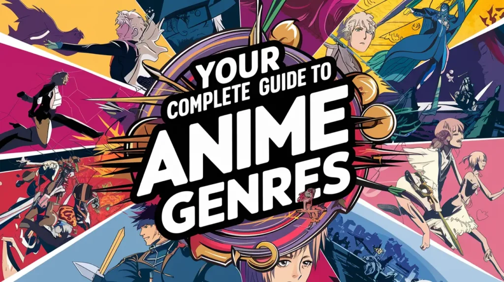

About us
Built for anime fans, by anime fans
AniOrbit exists to make anime discovery simple, organised, and enjoyable, whether you're a lifelong fan or just getting started.
Our history
AniOrbit was founded as a response to the growing global popularity of anime. AniOrbit was created to solve this by bringing essential anime information — titles, reviews, characters, genres, and recommendations — into one clear, well-structured, and visually appealing platform.
We started with a focused set of features: news, character profiles, reviews, recommendations, and anime summaries. As the platform grows, we plan to introduce discussion boards, community features, and personalised recommendations.

Mission
To provide accurate, engaging, and easily accessible anime content so fans can learn about, understand, and enjoy anime with confidence.
Vision
To grow into a trusted, go-to online anime knowledge resource, offering fans worldwide a fun, educational, and easy-to-use experience.
New to anime? Start here
Quick answers to the questions newcomers ask us most.
Pick a mood on our Mood Orbit and let it suggest a few shows. Short series and films such as Spirited Away or Cowboy Bebop are easy first steps because you can finish them quickly.
A sub keeps the original Japanese voices and adds subtitles. A dub replaces the voices with actors speaking another language. Neither is better, so choose what you enjoy.
Open the Browse Anime page, tap a genre button and the catalogue filters instantly. You can also search by title, studio or year.
It is the AniOrbit community score out of 10. AniOrbit is a fictional organisation built for an academic project, so these scores are illustrative rather than real-world ratings.
No. AniOrbit helps you discover and learn about anime. To watch, please use a licensed streaming service so the creators get paid. Want to help us grow? Become a contributor.
Our audience
AniOrbit is built primarily for teenagers and young adults aged 15–35, though anime lovers of every age are welcome. This includes: